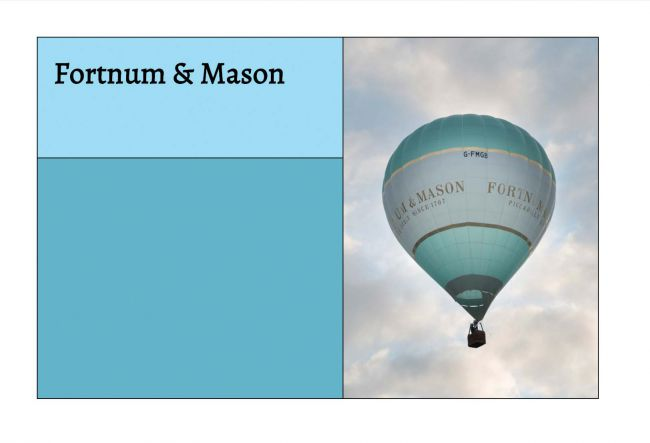
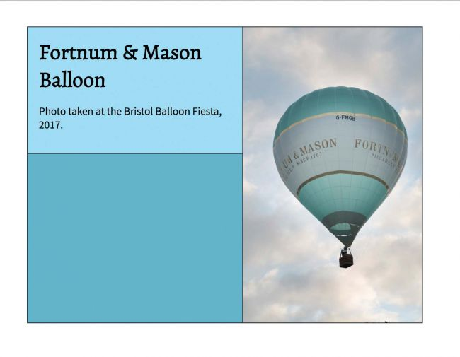
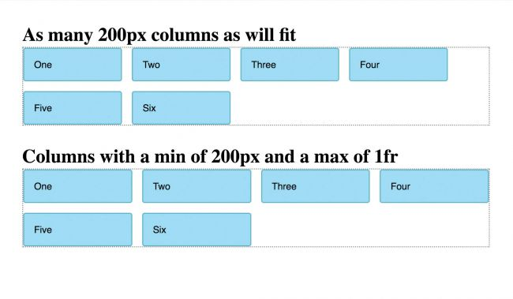
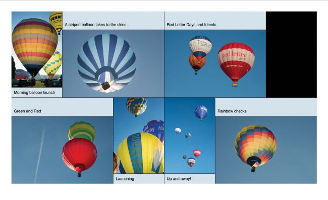
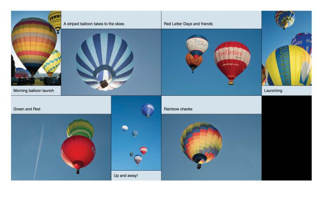
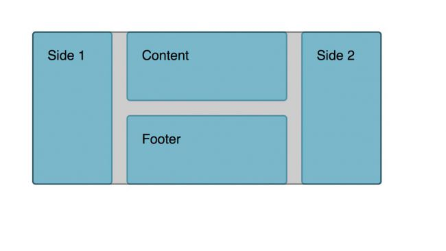
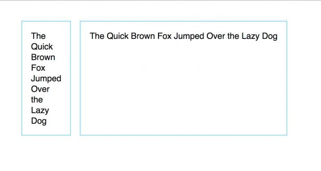

<!DOCTYPE html>
<html lang="zh_CN">
    <head><meta name="generator" content="Hexo 3.8.0">
        <meta charset="utf-8">
        
        <title>揭示CSS中Grid布局的秘密 | ZhangCC</title>
        <meta name="viewport" content="width=device-width, initial-scale=1, maximum-scale=1">
        <meta name="description" content="从2017年3月CSS Grid布局在浏览器中推出到现在为止，超过70%访客都会选择支持Grid布局。这个数据还在持续增长，并且随着Edge发布其更新的支持，它们将继续提高。 我希望您有已经机会探索了CSS Grid布局的一些特性，本文的目的在于展现一些您可能忽略的特性。我们也会初探一些可能会在未来规范中引入的特性。 01. 函数minmax()同其它布局方法不同，我们不需要在项目层面设置尺寸，在">
<meta name="keywords" content="CSS">
<meta property="og:type" content="article">
<meta property="og:title" content="揭示CSS中Grid布局的秘密">
<meta property="og:url" content="http://www.zhangcc.me/2018/02/22/揭示CSS中Grid布局的秘密/index.html">
<meta property="og:site_name" content="ZhangCC">
<meta property="og:description" content="从2017年3月CSS Grid布局在浏览器中推出到现在为止，超过70%访客都会选择支持Grid布局。这个数据还在持续增长，并且随着Edge发布其更新的支持，它们将继续提高。 我希望您有已经机会探索了CSS Grid布局的一些特性，本文的目的在于展现一些您可能忽略的特性。我们也会初探一些可能会在未来规范中引入的特性。 01. 函数minmax()同其它布局方法不同，我们不需要在项目层面设置尺寸，在">
<meta property="og:locale" content="zh-CN">
<meta property="og:image" content="http://www.zhangcc.me/2018/02/22/揭示CSS中Grid布局的秘密/minimum_height.jpg">
<meta property="og:image" content="http://www.zhangcc.me/2018/02/22/揭示CSS中Grid布局的秘密/minimax_function.jpg">
<meta property="og:image" content="http://www.zhangcc.me/2018/02/22/揭示CSS中Grid布局的秘密/auto_fill.jpg">
<meta property="og:image" content="http://www.zhangcc.me/2018/02/22/揭示CSS中Grid布局的秘密/grid_auto_flow_dense.jpg">
<meta property="og:image" content="http://www.zhangcc.me/2018/02/22/揭示CSS中Grid布局的秘密/grid_auto_flow.jpg">
<meta property="og:image" content="http://www.zhangcc.me/2018/02/22/揭示CSS中Grid布局的秘密/overlay.jpg">
<meta property="og:image" content="http://www.zhangcc.me/2018/02/22/揭示CSS中Grid布局的秘密/min_content.jpg">
<meta property="og:updated_time" content="2018-02-23T17:28:50.000Z">
<meta name="twitter:card" content="summary">
<meta name="twitter:title" content="揭示CSS中Grid布局的秘密">
<meta name="twitter:description" content="从2017年3月CSS Grid布局在浏览器中推出到现在为止，超过70%访客都会选择支持Grid布局。这个数据还在持续增长，并且随着Edge发布其更新的支持，它们将继续提高。 我希望您有已经机会探索了CSS Grid布局的一些特性，本文的目的在于展现一些您可能忽略的特性。我们也会初探一些可能会在未来规范中引入的特性。 01. 函数minmax()同其它布局方法不同，我们不需要在项目层面设置尺寸，在">
<meta name="twitter:image" content="http://www.zhangcc.me/2018/02/22/揭示CSS中Grid布局的秘密/minimum_height.jpg">
        
          <link rel="alternate" href="/atom.xml" title="ZhangCC" type="application/atom+xml">
        
        
          <link rel="icon" href="/favicon32.png" sizes="32x32">
        
        
          <link href="//fonts.googleapis.com/css?family=Source+Code+Pro" rel="stylesheet" type="text/css">
        
        <link href="https://fonts.googleapis.com/css?family=Indie+Flower" rel="stylesheet">
        <link rel="stylesheet" href="https://cdn.bootcss.com/bootstrap/3.3.7/css/bootstrap.min.css">
        <link rel="stylesheet" href="https://cdn.bootcss.com/font-awesome/4.7.0/css/font-awesome.css">
        <link rel="stylesheet" href="/css/index.css">
        <script src="https://cdn.bootcss.com/jquery/3.2.1/jquery.min.js"></script>
    </head>
</html>
    <body>
        <div class="container-fluid">
            <div class="row">
                <div class="col-xs-12 col-sm-12 col-md-offset-2 col-md-8 col-lg-offset-2 col-lg-8">
                    <header>
    <div class="header-row row">
        <div class="col-xs-12 col-sm-12 col-md-12 col-lg-12">
            <a class="header-img" href="/"></a>
        </div>
    </div>
    <div class="header-row row">
        <div class="col-xs-12 col-sm-12 col-md-12 col-lg-12">
            <p class="header-des text-center">丝丝屡屡，点点滴滴，记录在这里</p>
        </div>
    </div>
    <div class="header-row row">
        <nav class="navbar navbar-none navbar-default">
            <div class="container-fluid">
                <!-- Brand and toggle get grouped for better mobile display -->
                <div class="navbar-header">
                    <button type="button" class="navbar-toggle collapsed" data-toggle="collapse" data-target="#z-nav" aria-expanded="false">
                        <span class="sr-only">Toggle navigation</span>
                        <span class="icon-bar"></span>
                        <span class="icon-bar"></span>
                        <span class="icon-bar"></span>
                    </button>
                </div>

                <!-- Collect the nav links, forms, and other content for toggling -->
                <div class="collapse navbar-collapse" id="z-nav">
                    <ul class="nav-center nav navbar-nav">
                        
                            
                                <li><a href="/" title="主页">主页</a></li>
                            
                        
                            
                                <li><a href="/categories/技术/" title="技术">技术</a></li>
                            
                        
                            
                                <li><a href="/categories/散文/" title="散文">散文</a></li>
                            
                        
                            
                                <li><a href="/categories/美食/" title="美食">美食</a></li>
                            
                        
                            
                                <li><a href="/about/" title="关于">关于</a></li>
                            
                        
                    </ul>
                </div><!-- /.navbar-collapse -->
            </div><!-- /.container-fluid -->
        </nav>
    </div>
</header>

                    <main><article id="post-揭示CSS中Grid布局的秘密" class="article article-type-post" itemscope="" itemprop="blogPost">
    
  
    <h3 class="article-title text-center" itemprop="name">
      揭示CSS中Grid布局的秘密
    </h3>
  


    <div class="article-meta text-center">
    <span><i class="fa fa-calendar"></i><a href="/archives/2018/02">2018-02-22</a></span>
    
    
    
        <span>
            <i class="fa fa-bookmark"></i><a class="article-category-link" href="/categories/技术/">技术</a>·<a class="article-category-link" href="/categories/技术/CSS/">CSS</a>
        </span>
    
    
        <span>
            <i class="fa fa-tags"></i><a class="article-tag-link" href="/tags/CSS/">CSS</a>
        </span>
    
</div>

    
        <div class="article-content" itemprop="articleBody">
    <p>从2017年3月CSS Grid布局在浏览器中推出到现在为止，超过70%访客都会选择支持<a href="https://caniuse.com/#search=CSS%20grid%20layout" title="Grid布局" target="_blank" rel="noopener">Grid布局</a>。这个数据还在持续增长，并且随着Edge发布其更新的支持，它们将继续提高。</p>
<p>我希望您有已经机会探索了CSS Grid布局的一些特性，本文的目的在于展现一些您可能忽略的特性。我们也会初探一些可能会在未来规范中引入的特性。</p>
<h3 id="01-函数minmax"><a href="#01-函数minmax" class="headerlink" title="01. 函数minmax()"></a>01. 函数minmax()</h3><p>同其它布局方法不同，我们不需要在项目层面设置尺寸，在Grid布局中我们是在容器层面设置尺寸。我们定义track，它可以创建grid单元，用于放置内容。</p>
<p>想要通过弹性方式完成此事，允许内容比实际设计期望的或大或小。Grid给CSS带来新的特性。其中一个就是<code>minmax()</code>函数，这个函数的作用在于您可以指定一个track最大和最小的尺寸。</p>
<p>就如下面的案例所示，在一个空面板中，我在左上角放置了heading，右边放置一个大的图片。我希望左上角的元素最小高度为150px，不管heading中有多少行或者是否有其它内容。</p>
<p>然而，如果内容行数他多或者文本尺寸太大，我希望这个盒子尺寸要超过150px。我就是在此使用<code>minmax()</code>函数，设置最小尺寸为150px，最大尺寸为<code>auto</code>。</p>
<figure class="highlight plain"><table><tr><td class="gutter"><pre><span class="line">1</span><br><span class="line">2</span><br><span class="line">3</span><br><span class="line">4</span><br><span class="line">5</span><br></pre></td><td class="code"><pre><span class="line">.grid &#123;</span><br><span class="line">  display: grid;</span><br><span class="line">  grid-template-columns: 1.2fr 1fr;</span><br><span class="line">  grid-template-rows: minmax(150px, auto) minmax(300px,auto);</span><br><span class="line">&#125;</span><br></pre></td></tr></table></figure>
<p><br>通过设置一行最小高度，即使内容很短，我们也可以确保设计中行的尺寸智能伸缩。</p>
<p><br><code>minmax()</code>函数把最大尺寸设置为<code>auto</code>意味这内容即使很多尺寸很大不会发生溢出</p>
<h3 id="02-auto-fill与auto-fit"><a href="#02-auto-fill与auto-fit" class="headerlink" title="02. auto-fill与auto-fit"></a>02. <code>auto-fill</code>与<code>auto-fit</code></h3><p><code>Flexbox</code>可以让我们不依赖于<code>Media</code>询问就可以做响应式设计。<code>Grid</code>就更近一步，开动弹性设计模式，项目在两维尺度：行和列上都可以整齐排列。其中一种有用都模式是在容器中可以填充任意多个列，而完成这个我们需要使用两个关键字：<code>auto-fill</code>和<code>auto-fit</code>。</p>
<p>To have as many 200 pixel column tracks as will fit into a container use a track listing of:</p>
<figure class="highlight plain"><table><tr><td class="gutter"><pre><span class="line">1</span><br><span class="line">2</span><br><span class="line">3</span><br><span class="line">4</span><br></pre></td><td class="code"><pre><span class="line">.grid1 &#123;</span><br><span class="line">  display: grid;</span><br><span class="line">  grid-template-columns: repeat(auto-fill, 200px);</span><br><span class="line">&#125;</span><br></pre></td></tr></table></figure>
<p>为了在保持列弹性伸展同志，每列最小尺寸是200px，我们使用在前一节介绍都<code>minmax()</code>函数。我们可以创建列最小尺寸为<code>200px</code>而最大为<code>1fr</code>。当计算出可以填充多少个<code>200px</code>列，浏览器会在所有列之间平均分配剩余空间。</p>
<figure class="highlight plain"><table><tr><td class="gutter"><pre><span class="line">1</span><br><span class="line">2</span><br><span class="line">3</span><br><span class="line">4</span><br></pre></td><td class="code"><pre><span class="line">.grid1 &#123;</span><br><span class="line">  display: grid;</span><br><span class="line">  grid-template-columns: repeat(auto-fill, minmax(200px, auto));</span><br><span class="line">&#125;</span><br></pre></td></tr></table></figure>
<p></p>
<p>这张图展示了采用固定宽度和<code>auto-fill</code>属性与<code>minmax()</code>和<code>auto-fill</code>在创建弹性尺寸列时的区别</p>
<p>我在这使用了关键字<code>auto-fill</code>，这在即使没有内容时，也会为track保留空间。如果你采用的是另一个关键字<code>auto-fit</code>，任何空的track都会坍塌，它的空间会分配给其它track。</p>
<h3 id="03-密度填充模式"><a href="#03-密度填充模式" class="headerlink" title="03. 密度填充模式"></a>03. 密度填充模式</h3><p>当你将一个元素声明为<code>display: grid</code>时，所有的直接后代元素都是grid项目，所有的项目都会在grid上自动排列。这都是基于规范中定义的<strong>auto-placement</strong>规则。</p>
<p>如果有的项目是span track， 这就意味着这个项目不能填充track，它会在grid上新建一行。默认情况，Grid渐进执行并且按照项目在源码中的顺序展示。</p>
<p>但是，如果您将<code>grid-auto-flow</code>的值设置为<code>dense</code>，Grid将离开这些空白后开始回溯。如果它发现某个项目可以填充已经留下的间隙，他会从原来的顺序中抽出，然后填充间隙。</p>
<figure class="highlight plain"><table><tr><td class="gutter"><pre><span class="line">1</span><br><span class="line">2</span><br><span class="line">3</span><br><span class="line">4</span><br><span class="line">5</span><br></pre></td><td class="code"><pre><span class="line">.grid &#123;</span><br><span class="line">  display: grid;</span><br><span class="line">  grid-auto-flow: dense;</span><br><span class="line">  grid-template-columns: repeat(auto-fill,minmax(200px, 1fr));</span><br><span class="line">&#125;</span><br></pre></td></tr></table></figure>
<p></p>
<p><code>auto-placement</code>规则会让所有grid项目按顺序填充，这可能会出现间隙</p>
<p></p>
<p>当使用<code>grid-auto-flow: dense</code>时，会填充原来当空隙</p>
<p>当你要展示当内容没有逻辑顺序时，这会非常有用。但是，当访客时通过键盘，例如：<code>tab</code>键从一个项目切换到另一个项目时，这会变的时分难操作。所以使用时要万分小心并且要测试！</p>
<h3 id="04-魔法行与魔法区域"><a href="#04-魔法行与魔法区域" class="headerlink" title="04. 魔法行与魔法区域"></a>04. 魔法行与魔法区域</h3><p>当你用<code>grid-template-areas</code>方法布局内容时，你时在grid中创建一个命名区域。这会为行和列创建一系列命名当行列，通过使用区域名称，但是会在末尾加上<code>-start</code>和<code>-end</code>。下面这个列子，我已经使用通过定位我的网格区域而创建的命名行列来定位覆盖层。</p>
<figure class="highlight plain"><table><tr><td class="gutter"><pre><span class="line">1</span><br><span class="line">2</span><br><span class="line">3</span><br><span class="line">4</span><br><span class="line">5</span><br><span class="line">6</span><br><span class="line">7</span><br><span class="line">8</span><br><span class="line">9</span><br><span class="line">10</span><br><span class="line">11</span><br><span class="line">12</span><br><span class="line">13</span><br><span class="line">14</span><br><span class="line">15</span><br><span class="line">16</span><br><span class="line">17</span><br></pre></td><td class="code"><pre><span class="line">.grid &#123;</span><br><span class="line">  display: grid;</span><br><span class="line">  grid-template-columns: 1fr 2fr 1fr;</span><br><span class="line">  grid-auto-rows: minmax(100px, auto);</span><br><span class="line">  grid-template-areas:</span><br><span class="line">    &quot;sd1 content sd2&quot;</span><br><span class="line">    &quot;sd1 footer  sd2&quot;;</span><br><span class="line">&#125;</span><br><span class="line">.side1 &#123; grid-area: sd1; &#125;</span><br><span class="line">.side2 &#123; grid-area: sd2; &#125;</span><br><span class="line">.content &#123; grid-area: content; &#125;</span><br><span class="line">.footer &#123; grid-area: footer; &#125;</span><br><span class="line"></span><br><span class="line">.grid .overlay &#123;</span><br><span class="line">  grid-column: sd1-start / sd2-end;</span><br><span class="line">  grid-row: content-start / footer-end;</span><br><span class="line">&#125;</span><br></pre></td></tr></table></figure>
<p>当你使用命名当网格行列时，可以做反向工作。如果你以<code>-start</code>和<code>-end</code>结尾方式命名行和列，你将会将使用主名称创建一个命名区域。</p>
<p>一个区域用行列<code>content-start</code>和<code>content-end</code>定义行和列，将会使用name content。您可以使用<code>grid-area: content</code>在这个区域放置一个项目。</p>
<p></p>
<p>这个覆盖区已经被放置在网格区域之上，通过使用区域命名创建的命名行列</p>
<h3 id="05-默认对准"><a href="#05-默认对准" class="headerlink" title="05. 默认对准"></a>05. 默认对准</h3><p>当一个项目变成网格项目时，默认行为是扩展至整个网格区域，也就是说，除非项目是具有固有纵横比的东西。如果项目有一个纵横比，它会在行和列方向上都沿着开始线对齐。也就意味着默认情况下Grid不会拉长你都图片，尽管如果你想你可以通过改变对齐方法这样做。</p>
<h3 id="06-回调"><a href="#06-回调" class="headerlink" title="06. 回调"></a>06. 回调</h3><p>CSS Grid规范中详细描述了CSS Grid布局如何覆盖传统布局方法。如果你的项目是浮动的，使用<code>display: table</code>或者<code>display: inline-block</code>，如果是网格项目，规范中阐述了变化。</p>
<p>简而言之，如果项目成了网格项目，你会发现：</p>
<ul>
<li>如果是浮动，或者使用了<code>clear</code>属性，这些属性的行为都会失效</li>
<li>如果设置为<code>display: inline-block</code>或者是使用表格属性<code>display: table-cell</code>, 这些也都不再起作用</li>
<li>在使用表格属性时，如果在没有父table时设置为<code>display: table-cell</code>会生成一个匿名框，现在也不会在生成了</li>
<li><code>vertical-align</code>不会起作用</li>
</ul>
<p>我创建了一些案例详细描述了这些覆盖原则，你可以访问<a href="https://rachelandrew.co.uk/css/cheatsheets/grid-fallbacks" target="_blank" rel="noopener">我的网站</a>查看。</p>
<p>基于这个覆盖原则会作用域多个方面，你需要留意当变成网格项目时项目的宽度变化。在之前的布局方法中，我们直接在项目层面控制项目宽度。</p>
<p>在Grid中，我们将项目布置于网格单元中，这意味着如果你用百分比的方式设置项目宽度，一旦项目变成网格项目，宽度会按照网格区域的百分比计算。</p>
<p>这个问题的解决方案是另一份CSS规范：<strong>Feature Queries</strong>。我们可以使用<strong>Feature Queries</strong>测试是否支持Grid布局。如果浏览器支持Grid，我们将宽度设置为<code>auto</code>。</p>
<figure class="highlight plain"><table><tr><td class="gutter"><pre><span class="line">1</span><br><span class="line">2</span><br><span class="line">3</span><br><span class="line">4</span><br><span class="line">5</span><br><span class="line">6</span><br><span class="line">7</span><br><span class="line">8</span><br><span class="line">9</span><br></pre></td><td class="code"><pre><span class="line">.grid &gt; div &#123;</span><br><span class="line">  float: left;</span><br><span class="line">  width: 33.333%;</span><br><span class="line">&#125;</span><br><span class="line">@supports (display: grid) &#123;</span><br><span class="line">  .grid &gt; div &#123;</span><br><span class="line">    width: auto;</span><br><span class="line">  &#125;</span><br><span class="line">&#125;</span><br></pre></td></tr></table></figure>
<h3 id="07-尺寸关键字：min-content和max-content"><a href="#07-尺寸关键字：min-content和max-content" class="headerlink" title="07. 尺寸关键字：min-content和max-content"></a>07. 尺寸关键字：<code>min-content</code>和<code>max-content</code></h3><p>《CSS Intrinsic &amp; Extrinsic Sizing Module Level 3》规范为尺寸定义了其它的关键字。其中包含<code>min-content</code>和<code>max-content</code>，它们可以用于定义网格track的尺寸。</p>
<p>举一个简单例子，我创建一个两列track网格。其中一列用<code>min-content</code>定义尺寸，另一列用过<code>max-content</code>定义。第一列仅仅会刚刚满足显示内容—这也是这一列可用的最小的尺寸，第二列会扩展至整个一行显示，你会发现如果是这样你可能需要处理溢出。</p>
<figure class="highlight plain"><table><tr><td class="gutter"><pre><span class="line">1</span><br><span class="line">2</span><br><span class="line">3</span><br><span class="line">4</span><br></pre></td><td class="code"><pre><span class="line">.grid &#123;</span><br><span class="line">  display: grid;</span><br><span class="line">  grid-template-columns: min-content max-content;</span><br><span class="line">&#125;</span><br></pre></td></tr></table></figure>
<p></p>
<p>Grid规范现在处在备选方案状态，意味着我们希望不要做他多大的修改；反之，它将进入一个阶段，我们至少要查找每个功能的两个实现。这样才能确保这个规范有意义并且可以被浏览器采纳。</p>
<p>Grid仍然在发生着变化，但是，在本文剩余的部分，我们看看Level1规范最近发生的一些改变，其中有些是我们希望在Level2中可以看到了。</p>
<h3 id="08-间隙"><a href="#08-间隙" class="headerlink" title="08. 间隙"></a>08. 间隙</h3><p><code>grid-gap</code>，<code>grid-column-gap</code>以及<code>grid-row-gap</code> 属性在<strong>2017年8月CSS工作组会议</strong>之后修改为<code>gap</code>、<code>column-gap</code>和<code>row-gap</code>。在<strong>Box Alignment</strong>规范中也已经有了相关的定义。</p>
<p>这个规范取自于<strong>Flexbox</strong>中<strong>Box Alignment</strong>规范，稍作延伸可以用于Grid甚至是其它布局方法。</p>
<p>把间隙特性放于<strong>Box Alignment</strong>规范中并且以更通用的方式命名意味着他们可以用于其它布局类型，这也是它的意义所在。最能表明其意义的就是<strong>Flexbox</strong>。</p>
<p>这次重命名意味着我们在<strong>Flexbox</strong>中也可以使用<code>gap</code>属性，边缘处不会再混乱。浏览器会alias旧的名称到新到名称，这样即使你在Grid布局中使用<code>gap</code>也不会中断。然而，您可能想自己添加这两个属性，浏览器会忽略他们不支持的内容。</p>
<h3 id="09-Grid不是Masonry"><a href="#09-Grid不是Masonry" class="headerlink" title="09. Grid不是Masonry"></a>09. Grid不是Masonry</h3><p>当人们第一眼看到密集填充模式时，他们认为Grid可以做Masonry布局模式。然而，Masonry是另一个完全不同的布局模式，一个标准的Masonry布局并不是严格意义上的网格，我们可以把这种模式定位于Flexbox和Grid之间。</p>
<p>然而，在CSS工作组也在思考着这个问题。据我们所知似乎每个开发者都希望能够如此。您可以在GitHub的<a href="https://github.com/w3c/csswg-drafts/issues/945" title="CSS WG drafts repository" target="_blank" rel="noopener">CSS WG drafts 仓库</a>中看到对于这方面的讨论，您也可以表达以下自己的想法。</p>
<h3 id="10-Grid-Area伪元素"><a href="#10-Grid-Area伪元素" class="headerlink" title="10. Grid Area伪元素"></a>10. Grid Area伪元素</h3><p>关于Grid布局另一个通用特性需求是可以样式化网格单元或网格区域，在不添加任何元素的情况下完成。目前，在区域中添加边框，你需要在标记中添加一个空元素或者使用generated content创建一个网格项目。</p>
<p>提出了一个问题是关于考虑在网格区域添加一些类似于伪元素，如果你想添加背景或边框到一个特定的区域而不添加额外的标记或者使用生成的内容，这也许最终会帮你实现。</p>

</div>

        
<nav class="article-nav" id="articleNav">
    
        <a class="article-nav-link" href="/2018/02/22/I-will-participate-the-test-again/" tittle="I will participate the test again">上一篇</a>
    
    
        <a class="article-nav-link" href="/2018/02/13/Web设计师必须掌握的12项技能/" tittle="Web设计师必须掌握的12项技能">下一篇</a>
  
</nav>


    
    
</article>

</main>
                    <footer>
    <p class="copyright text-center">©2018 基于Hexo搭建  主题<a href="https://github.com/mrzhangcc/hexo-theme-sim" title="hexo-theme-sim">hexo-theme-sim</a>  作者<a href="http://www.zhangcc.me" title="Cici">Cici</a></p>
</footer>

                </div>
            </div>
        </div>
    </body>
    <script src="https://cdn.bootcss.com/bootstrap/3.3.7/js/bootstrap.min.js"></script>


